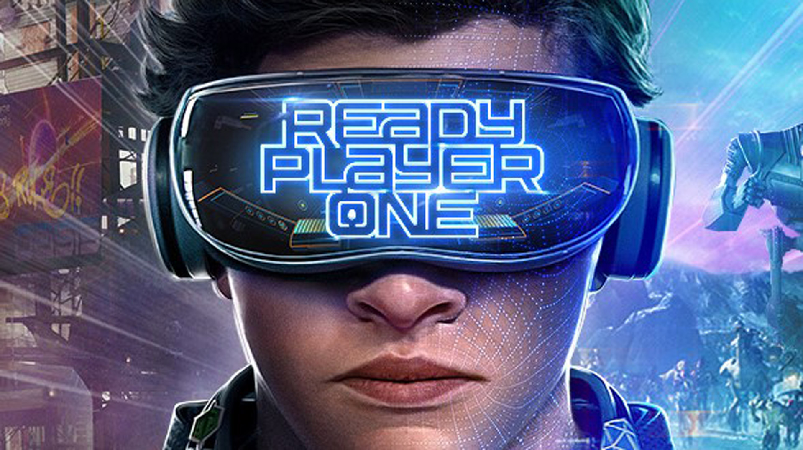

Першому гравцю приготуватися (2019)
Історія
Чудова фантастична пригода від неперевершеного Стівена Спілберга за мотивами культового однойменного роману американського письменника Ернеста Клайна, переповнена неочікуваними відсилками до західної і японської поп-культури.
За сюжетом, у 2045 році злочинна влада та економічні кризи довели США «до зубожіння». Більшість жителів збігає від реальності в глобальну відеогру OASIS. Творець гри Джеймс Холлідей помер, і стало відомо, що його частку в компанії отримає той, хто збере усі розкидані по грі таємні ключі та знайде залишену Холлідеєм «пасхалку». Після цієї новини в гру почали грати не лише рядові гравці, але й реальні профі, які шукають артефакт на замовлення корпоративних босів. Одного разу підліток-сирота Уейд Уоттс, який грає під ніком «Парсифаль», розгадує загадку першого ключа і разом з друзями очолює рейтинг мисливців за «пасхалками». Це привертає до хлопця неабияку увагу мерзотників…
Інформація
| Актор | Роль |
| Тай Шерідан | Вейд Воттс/Персіваль |
| Олівія Кук | Саманта Евелін Кук/Артеміда |
| Ліна Вейт | Гелен Гарріс/Ейч |
| Філіп Жао | Акідеше Карацу/Шо |
| Він Морізакі | Тошіро Йошіакі/Дайто |
| Бен Мендельсон | Нолан Соррендо |
| Марк Райленс | Джейм Донован Голлідей/Анорак |
| Саймон Пегг | Огден Морроу/Куратор |